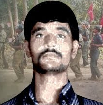
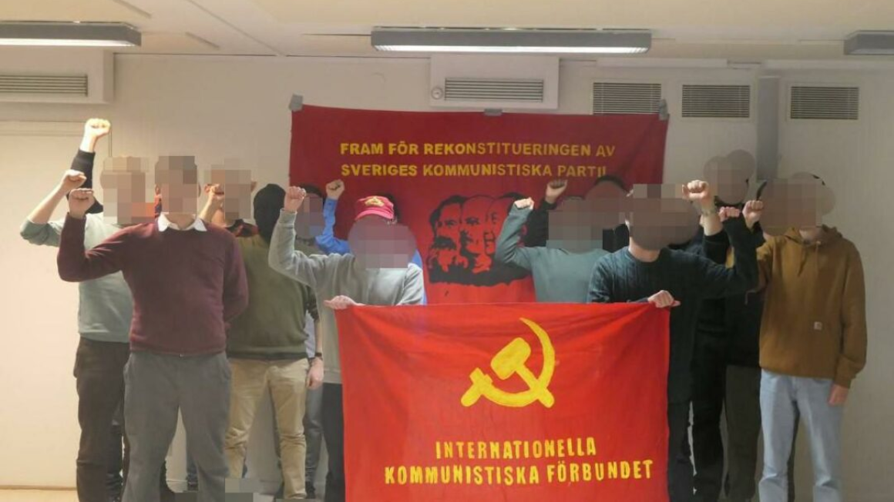
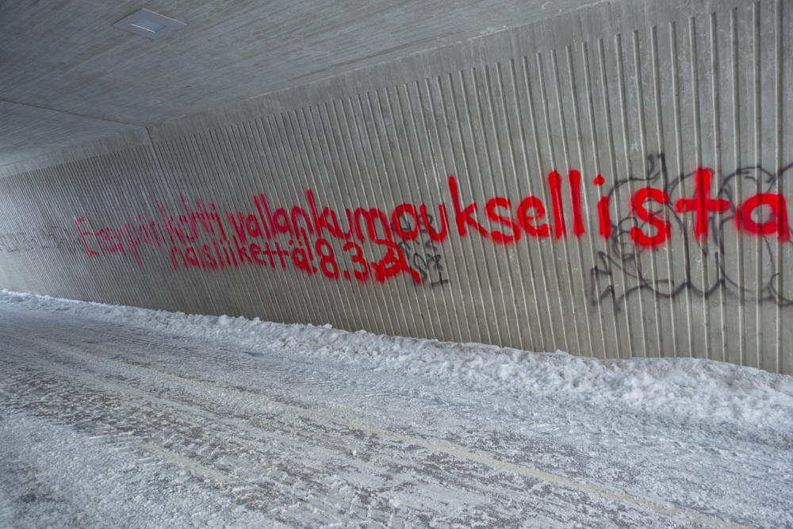
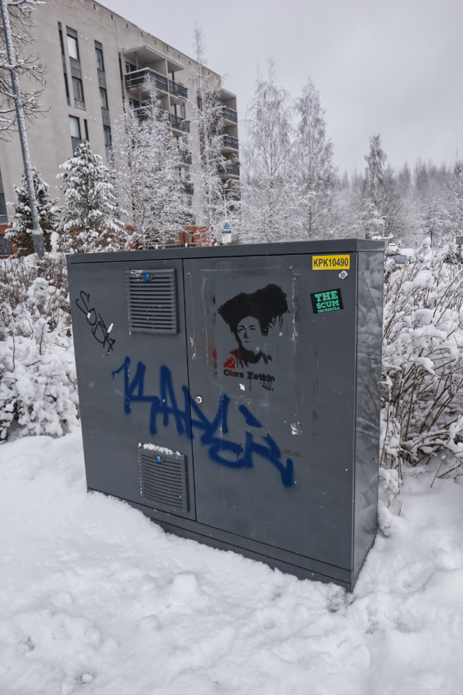
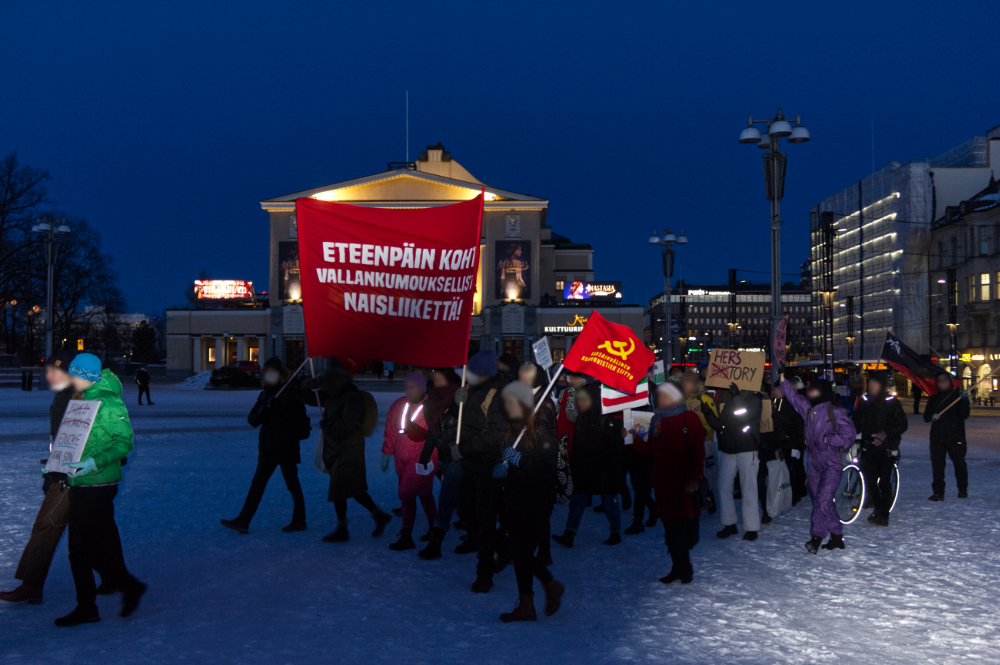
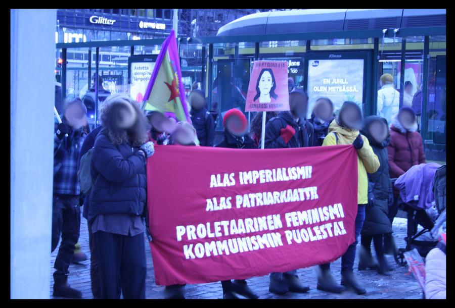
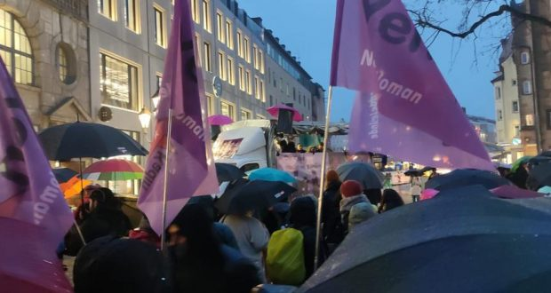
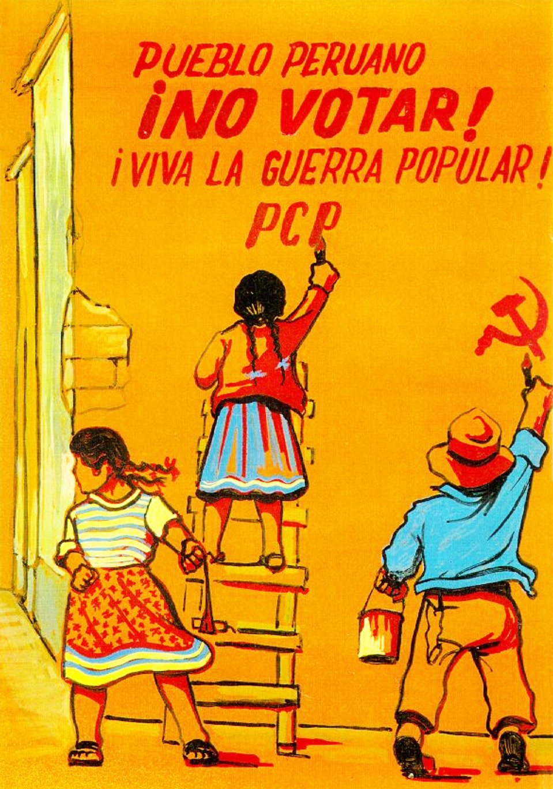
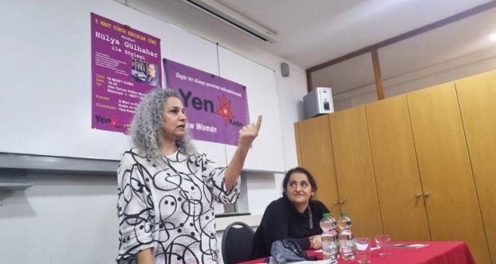

.jpg){kind=link}
{kind=link}
.jpg){kind=link}
.jpg) 与伊朗妇女，反对我们的帝国主义
与伊朗妇女，反对我们的帝国主义
[This lan. PDF][This lan. ODT][This lan. MD][This lan. TXT][This lan. TXT LIST]
Please select your language 请选择你的语言:
作者: redstar
描述: 3月8日，我们参加了MFPR米兰诺（MFPR Milano），参加了RSA“蓝色年”的驻军，这是第一次罢工，N ...
时间: 2023-03-11T07:00:00+01:00
图片: ['IMG-20230308-WA0104%20(1).jpg', 'iran%20milano.jpg', 'loc%20iran_page-0001%20(1).jpg']
MFPR米兰
3月8日，我们首次参加了RSA“ Anniazzuri”的工人的驻军，我们的存在是如此之多，我们向扩音器解释了一般妇女的困难条件，尤其是妇女的困难条件，但尤其是健康的困难条件。
工人与MFPR同伴之间的一项利用工作，以表达他们的言语，以他们的言语解释，莱洛罗要求。 出于这个原因，我们想到采访一位解释剥削情况的Alavetors，不仅是因为它也强调了他们如何担心病人的事实，但也无法遵循。皮肤，护理减少到骨头，不良食物等。
面试
__
我们谈到了其他工人组织了达尔巴索(Dalbasso)的集会，就像贝雷塔(Beretta)工人所做的那样，工人在那里占地。
我们强调了保持联系，加入健康灾难的重要性，特别是在护理和援助领域。
然后，与维特伯氏斗争委员会的莫妮卡有联系解释了我们为美国妇女奋斗的一天的意义，雪松只是性别的问题，而是阶级斗争的问题
_ gly登记_
__
我们可以说，我们已经将它们包裹起来，并以我们的团结和连接所欣赏。
此外，为了使更具体和强大，至于我们的妇女碰巧具有纠纷，斗争中工人之间的团结是与特雷佐(Trezzo)工人罢工的团结。
与伊朗妇女，反对我们的帝国主义
.jpg)
News Source: https://proletaricomunisti.blogspot.com/2023/03/pc-11-marzo-ancora-sull8-marzo-milano.html
作者: LuigiLerisVIVE
描述: 关于Crotone的国家示威活动：刚刚死在海中，我们在每个国家战斗以推翻他们的帝国主义...
时间: 2023-03-11T10:09:00+01:00
图片: ['Polish_20230304_094214770.jpg']
 来自马克思和恩格斯共产党的宣言
来自马克思和恩格斯共产党的宣言
_ ..工人没有家。 他们不能删除他们没有的东西。 由于无产阶级必须要做的第一件事是征服自己构成自己创新的政治政治ladominium，因此它仍然是民族，尽管不是在阿伯加斯的意义上。
_人民的分离和民族对抗将随着资产阶级的发展，商业自由，世界市场，工业生产的统一性和核心存在条件的发展，已经消失了。
_无产阶级的领域将使它们消失得更多。 他解放的第一批任务之一是联合行动，至少是村民。
_在最高的措施中废除了一个国家对一个国家的剥削，因为被另一个人的剥削被废除了。
_随着阶级在国家内的对抗，国家之间相互敌意的阐述消失了。
News Source: https://proletaricomunisti.blogspot.com/2023/03/pc-11-marzo-gli-operai-non-hanno-patria.html
作者: baronerosso
描述: 足球运动员将横幅带到场上，以使Cutro的死亡：裁判处罚球队，并取消了队长的资格一个月...
时间: 2023-03-11T10:33:00+01:00
图片: ['brighela-768x768.jpg']
足球运动员将横幅带到球场上，以死于卡特罗的死亡：遗嘱团队并取消队长的资格一个月
 _di lucia landoni _
_di lucia landoni _
Bergamasca第三类别团队ASD Athletic Brighela将Ingampo带到了哨子面前，开始了一张带有“ Cimiteromediterraneo的”一词。 但是授权被拒绝了。 伊尔卡索(Ilcaso)在议会中结束
被罚款被罚款(在Ilnaufragio dicutro之后的抗议横幅](https://www.repubblica.it/politica/2023/03/10/news/cutro_meloni_parenti_vittime_naufragio-391419796/)： ASD Athletic Brighela ，伯加马斯卡第三类足球队，将因贝加莫体育法官改编而判处550欧元的罚款，以获取“地中海公墓。在3月5日星期日对阵内格隆河的比赛开始之前，他们的球员片白色，争议搬到了扫描仪。
但是，裁判和奥拉里西亚尚未授权的职位以卑鄙的成型为代价：正如Eco Dibergamo的报道，除了对公司的提议外，船长但是体育法官不欢迎这个外部化：“从关系补充支持的官方招标文件中，阿什莱特·布里格拉(Ashletic Brighela)公司的队长彼得罗·罗塔(Pietro Rota)先生询问了被授权的种族主管另一方面，在没有政治内容的情况下，在球场上的旗帜，担保人授权了该请求。” 但是，拒绝尚未阻止ICALCIATORS的拒绝：裁判报告报告说：“经常有资格参加球场上的ASD运动Brighela船长，上述成员的旗帜是由他自己定位的成员，未经裁判没有在报告中确定的”。
那时，上述俱乐部的所有参与者都向公众面临大约二十种小吃，而不是由asdriver negrone的零食接触，因此无视比赛官员的迹象”。 触发了惩罚，但是，尚未在运动中脱颖而出：“今晚我们将举行一个大会，我们将讨论这个故事，因为我们仍然错过了一些数据 - 公司说 - 到我们的阿达拉我们不会发表任何声明”。
News Source: https://proletaricomunisti.blogspot.com/2023/03/11-marzo-giocatori-antirazzisti-al.html
作者: DEM VOLKE DIENEN
时间: 2023-03-11T11:54:47+00:00
图片: ['Februar_Uni_Malung_Mexiko_I.JPG']
标签: ['Mexiko']
类别: None
 _我们在21号M ARZ星期二 - 下午7点分享一次会议 - HH -Sternschanze，已发送给我们。
_我们在21号M ARZ星期二 - 下午7点分享一次会议 - HH -Sternschanze，已发送给我们。
Interocean Corridor pl uthert和墨西哥的死者和致命的贫穷农民和土著电压!
CIIT的巨型项目是一项超过100年的计划，在墨西哥反动政府的反动刺激者安德烈斯·曼努埃洛普斯·奥布拉多(Andres Manuellopez Obrador)的帮助下，对该地区的人民(尤其是贫穷的农民和土著沃尔克尔 - 驱逐出境) - 您已经建立了几代人的国家的丧失，对您居住的环境的中毒，该地区土地地区的盗窃，国家的恐怖，饥饿的居民 - 更多的剥削和负压。
反对帝国主义大型项目的这种剥削和负压，墨西哥人民在该地区和地区形成了广泛的抵抗。 但是，墨西哥国家试图强制对大众运动的巨型暴力行为。在林肯·塔加拉巴(Rincon Tagolaba)和圣克鲁斯·塔加拉巴(Santa Cruz Tagolaba)社区的这场斗争。 自1月底以来，墨西哥海军一直驻扎在该地区，以接收人口。 Soldner帮派 - 尤其是著名的“ Tacho” Canasta和他的兄弟Sergio Gutierrez对污染进行了污染，并希望捕捉提到的社区的着陆，并丰富了自己的污染。为此，他们将其带到了恐怖之外，破坏饮用水供应，锋利武器的火灾和插头拥有人口的所有权。随着该地区人口的到来，它变成了大屠杀!对墨西哥人民的恐怖结束!
以帝国主义的大型项目在地峡Vontehuantepec上!
在!高位国际团结
集会：
21 \。 M DICTRINE / 下午7点
S Sternschanze / Hamburg
邦尼反对帝国主义侵略
MARZ 2023
作者: Tjen Folket Media
描述: 我们在瑞典的共产党福林根的同志发表了以下声明。
发布时间: 2023-03-11T12:09:36+00:00
修改时间: 2023-03-11T12:41:00+00:00
图片: ['Foto-5.png']
标签: None
类别: 'Norden'

*_对于小偷，人们的媒体有贡献的方式。
瑞典共产主义协会的摄像机弹簧发表了声明。
[共产党协会]出版商(https://kommunisten.nu/?p=14190)04.03.23
在共产党会议的全国会议中，共产党人向共产党人致敬，挣扎和马克思列宁主义者党派政党下的革命群众正在为战争而战和准备。 会议是在精神上举行的，以改善毛主义的体现，协会的建设和我们的实践。
瑞典为毛主义争取的斗争已经漫长，已经进行了40多年。共产主义的förening是这场斗争的结果，我们理解春天的责任是使毛主义在世界各地保持高位。 埃弗里根的情况； 随着压迫，经济危机，通货膨胀和无产阶级的恶化。 但是在丹尼特会议中，据说伟大的意志可以满足这些任务。 成立于参与无产阶级的斗争和斗争，以及通过这些强化作为瑞典革命的指导之星。
最后，我们向国际共产党协会，构成IKF的当事方和组织打招呼。 我们已经开始努力结束传播者长期存在的分裂，以实现一个 - 世界各地的单位，这是一个辉煌的发展。 KF现在正朝着马克思主义列宁主义莫斯的标签(在IKF的标签下)迈出的台阶，为瑞典共产党的赢得会议，组织，政治化，手机，并最终开始了人们的范围。 统治旧国家并建立社会主义直到共产主义!
News Source: https://tjen-folket.no/index.php/2023/03/11/sverige-kommunistiska-foreningens-femte-nasjonale-konferanse/
作者: Tjen Folket Media
描述: 尽管英国帝国主义一遍又一遍地试图瘫痪爱尔兰人民的自由斗争，甚至容忍在其领土内为此目的限制习俗，只是为了避免艰难的G…
发布时间: 2023-03-11T12:31:22+00:00
修改时间: 2023-03-11T12:40:19+00:00
图片: ['Foto-6.png']
标签: None
类别: 'Europa'
_图片：PSNI Press发言人举行了有关案件的新闻发布会。
由Eart Folket Media的评论员。
尽管英国帝国主义一次又一次地试图瘫痪爱尔兰民间自由的斗争，甚至在其领土内为此目的弥补海关边界，只是为了避免爱尔兰自由主义者与北爱尔兰武装行动的英国殖民地之间的艰难边界爱尔兰独立运动。 在过去的几个月中，情况一直是这种情况，北爱尔兰的许多武装行动对英国的麦奎斯主义。
2月22日晚上，[Johncaldwell]上有武装伏击(https://www.bbc.com/news/uk-northern-ireland-10866072?at_medium=RSS&at_campaign=KARANGA)，是北爱尔兰泰隆区的奥马格(Omagh)的一名更高的英国警察调查员。 专门制作的是，当攻击链中时，警察不在工作。
据媒体报道，两名蒙面和武装人员来到警察，他们正要将运动器材包裹在汽车的后备箱中。 丹向他开放，此后，袭击者一定逃离了一辆英雄一段时间后燃烧的汽车。 此后，警察已经住院了，他的病情被描述为关键，但稳定。 几天后，共和军占领了(英国媒体称为“新IRA”)注意对警察袭击的责任，并说对英国唯一的反应成员有针对性的攻击。
2月25日，英国军队的特殊炸弹存款单位被召集到2月25日的泰隆区贝拉格(Beragh)因可疑而令人眼花frop乱的状况，这一事实也反映了英国反应的恐慌。 部队阻止了该地区三天，然后宣布发现的是气枪武器，即儿童玩具。 将武器放置为团结行进对于约翰·考德威尔(John Caldwell I Beragh)。一方面，这些行动表明了爱尔兰争取民族解放的斗争的活力，另一方面，害怕对坎佩尼英国居民的行为的恐惧。 英国室内市场的划分，以及部署了一大批士兵以清理物品，这表明了英国帝国主义如何无法将局势纳入自己的后院。
参考 他们伏击直径：武装行动agast agast the Britishocupation
News Source: https://tjen-folket.no/index.php/2023/03/11/irland-vaepna-aksjoner-mot-den-britiske-okkupasjonen/
作者: fannyhill
描述: 我们的承诺：加强与我们的帝国主义，政府，刺客国家的斗争，这是爱奥尼亚海的大屠杀是...
时间: 2023-03-11T12:39:00+01:00
图片: ['download.jpg']

我们的承诺：加强与我们帝国主义的斗争，Ilsuo政府，其凶手
乔尼奥海发生的大屠杀是近年来在地中海的又一次大屠杀。 他们的责任具有帝国主义，作为一种制度，作为国家和政府。
意大利是对这些死亡的第一个也是最后一个负责。 第一个是因为他的海洋是这些死亡发生的海洋是来自其他地中海国家的港口，即今天的第一个利比亚突尼斯，移民在集中营不受欢迎的苦难之后，即使大屠杀带来了其他地区的移民，在其他街道上。 这些方案是与意大利帝国主义政府联盟的这些国家，该国建立了一段时间以产生这些旅行和这些死亡的协议，并在沟通上表明Meloni的旅行(业主加入到ENI上)，**儿童，妇女，移民被用作盘式市场的商品，可以在这些国家开展业务，资本家的利润!镇压，痛苦和死亡，在不可能努力奋斗的情况下，这会带来许多证券和受欢迎的群众逃脱。
不可能在没有资本主义的帝国主义制度的情况下结束这种无限的大屠杀。无产阶级和人口的群众斗争与伊洛罗·吉米(Iloro Regimi)和支持他们的帝国主义斗争。目前，地中海和其中的爱奥尼亚人被纳维德尔的帝国主义皱起，武器耗资数十亿美元。 没有挽救人类生命的船只，而是领导演习，并训练只有两个目标的军事任务：准备参加帝国主义战争游行，并支持强迫阶段，并支持在其国际纠纷中所主张或放置在Thetex的一部分中。
因此，强调了产生移民纽带的所有经济和社会状况，以及最近几天就在Costadi Cutro结束的可怕连锁店。
意大利帝国主义意大利，从Bossi/Fino到最后一个悲惨的政府/Piantedo，制定了针对非救援的法律和行动，再到我来移民的国家的沿海卫队的支持，以使第一批战note to and tornench不救援，但员工。 最后的法令在死者和家人的面前被抛出了同样的迹象：不必要的镇压被嘲笑，对走私者的空虚，但在中心，总是有移民的阻止他们只能进入DaipaDron剥削的“强，健康”。 同时，卡特罗(Cutro)的大屠杀与其他人一样冒着被强加的风险，涵盖部长的犯罪行为和所有伊尔戈弗诺(Ilgoverno)的犯罪行为，甚至可以将它们共同定义为“种族灭绝”逻辑，该政府已达到并超过了一个新的限制，现在在全国范围内被许多人谴责。
**我们之所以如此，是因为最后一次大屠杀的责任是从已经进行的所有形式的调查和证词中带来的； 同样在这个资产阶级州，我们希望批准承担责任。 我们之所以是因为这个政府的部长和洛拉卡帕(Meloni)的大屠杀也付出了政治成本。在Cutro中，在Cutro的全国性释放中，在各个层面的各个层面上都有巨大的团结，这对这些部长进行了制动并质疑这些政府。11.3.23
共产主义无产阶级/PCM
News Source: https://proletaricomunisti.blogspot.com/2023/03/pc-11-marzo-cutro-delegazione-di.html
作者: fannyhill
描述: 革命性的无产阶级女权主义
时间: 2023-03-11T13:09:00+01:00
图片: ['download.jpg']

News Source: https://femminismorivoluzionario.blogspot.com/2023/03/oggi-alla-manifestazione-cutro-anche.html
作者: Verein der Neuen Demokratie
描述: 3月8日在汉堡举行了许多会议，到目前为止，最大的示威活动有几千名参与者。 这是...
时间: 2023-03-11T14:43:00+01:00
图片: ['Hamburg_8._M%C3%A4rz_2023-Rotes_Frauenkomitee_Hamburg-1.jpg', 'Hamburg_8._M%C3%A4rz_2023-Rotes_Frauenkomitee_Hamburg-2.jpg']
 3月8日在汉堡举行了许多会议，最大的示威活动有几千名参与者。 在这里，红色女子委员会汉堡的特遣队也参加了示威的前三分之一，它是由口号透明的：“妇女战斗和屈服于：反对帝国主义和父权制!反对通货膨胀和军事主义的浪潮!”
3月8日在汉堡举行了许多会议，最大的示威活动有几千名参与者。 在这里，红色女子委员会汉堡的特遣队也参加了示威的前三分之一，它是由口号透明的：“妇女战斗和屈服于：反对帝国主义和父权制!反对通货膨胀和军事主义的浪潮!”
此外，3月8日分发了红色妇女委员会的数百个传单-FRG，并大声调整了标语，这些口号是在分裂的示威活动中发现的。 即使在这次示威中，这不是女权主义的无产阶级色彩，而是其他示威活动中的好战气氛，这表明，妇女人群在政治斗争中越来越活跃，并最终增长了无产阶级妇女运动。
 由Refa 09 \撰写。 2023年3月
由Refa 09 \撰写。 2023年3月
News Source: https://vnd-peru.blogspot.com/2023/03/8-marz-2023-in-hamburg.html
作者: fannyhill
描述: 没有任何
时间: 2023-03-11T17:48:00+01:00
图片: []
News Source: https://proletaricomunisti.blogspot.com/2023/03/pc-11-marzo-prime-immagini-da-cutro.html
作者: fannyhill
描述: 我们报道了2月在勒蒙德·迪福利特（Le Monde Elipnomatique）上发表的长篇文章的第一部分，介绍了以色列的局势，后者正在献出生命。
时间: 2023-03-11T18:58:00+01:00
图片: ['download.jpg']
 我们报道了2月在Le Mondadiplomatique上发表的长篇文章的第一部分，介绍了以色列的局势，他在这几天献出了生命，以强烈抗议人口
我们报道了2月在Le Mondadiplomatique上发表的长篇文章的第一部分，介绍了以色列的局势，他在这几天献出了生命，以强烈抗议人口
第一部分很好地解释了内塔尼亚胡对决定的行动的段落 - 因此，将其持续的任何残留民主形式和基于犹太民族主义的非政权建立的危险计划。
内塔尼亚胡昨天在意大利被梅洛尼(Meloni)收到，以收紧政治，经济和经济，在这里也受到抗议表现的欢迎。
这份报告以色列/意大利在此阶段获得了一项意味着国家与政府之间的“正常”关系。 在意大利的梅洛尼/萨尔维尼政府的某种意义上，内塔尼亚关于宪法承包商，建立总统主义，权力的伦敦； 但尤其是，预见到最小的攻击。诺迪奥才刚刚开始，但他还旨在控制群众，从司法机构中删除自治，修改文章和程序，这些文章和程序维护了Alpower政治阶层，拯救了他的自主权和程序。从腐败，欺诈等定罪的人。
从这个意义上讲，内塔尼亚胡比看起来更接近意大利。
================================
向极右标记的运动
以色列，身份政变
_本杰明·内塔尼亚胡(Benjamin Netanyahu)优先考虑他的盟友和超凡统治者所要求的政治改革，正在扩大以色列民主的转变。 礼节性的权力以及法官的权力是在一个联盟的视线中，该联盟扩大了宗教在公共教育中的影响，对巴勒斯坦人无所作为。
卡洛·恩德林(Carlo Enderlin)内塔尼亚胡(Netanyahu)委托了改变司法系统阿尔西格·莱文·莱文(Alsignor Yariv Levin)，法学家和副手的使命，他从2009年的利库德(Likud)名单中选举中率领法官对法官进行了反对。 1月4日，他刚任命为司法部长，基于“人们”认识到供应的原则，介绍了他的“激进修订”项目，当时供暖者选出了合法性，而无需干预裁判官。 不由民意调查任命。 因此，一个被称为“旁路”条款将允许六十一名代表取消认为法律违宪的至上的判决。 _“以下的文本可以由法官取消，” _ _坚持说，莱文·伊诺特尔先生，总体任命最高法院的成员应通过多数执政的控制权。 其他措施是预见的，例如重写刑法的某些条款，以弄清班级班级中腐败的转介次数。 从理论上讲，内塔尼亚胡(Netanyahu)可以发现自己被任命为法官，如果他因欺诈，滥用权力和腐败目前在他的Corso -Control中的欺诈审判，滥用权力和腐败的审判而将其上诉上诉。
News Source: https://proletaricomunisti.blogspot.com/2023/03/pc-11-marzo-i-piani-di-spostamento.html
作者: Philippine Revolution Web Central
发布时间: 2023-03-11T92:00:00-04:00
修改时间: None
描述: 菲律宾人民斗争（FFPS）的朋友于3月6日呼吁发起全球协调的运动，以菲律宾民主党阵线为特色（n
图片: ['ffps-friends-of-the-filipino-people-in-struggle-1024x577.png']
类别: ['International', "People's Struggles"]
类型: article
 菲律宾人的朋友在斗争中6月6日打电话(FFP)发起一项全球协调的运动，以菲律宾国家民主阵线为特色(NDFP)以及菲律宾人民在4月24日与即将到来的吉特尔萨尔(Giintursary)有关的斗争。
菲律宾人的朋友在斗争中6月6日打电话(FFP)发起一项全球协调的运动，以菲律宾国家民主阵线为特色(NDFP)以及菲律宾人民在4月24日与即将到来的吉特尔萨尔(Giintursary)有关的斗争。
根据FFPS的说法，它希望克服“ NDFP”对菲律宾人民的代表，以及菲律宾人民通过民族和德国革命的正当和持久和平的努力的重要性。” 在这里，该活动将持续一年2024年4月。
该组织在称菲律宾人民的危机中分享了他们消除半殖民和脆弱社会危机的唯一选择。 在这里，“越来越多的剥削和加强压迫……在菲律宾是菲律宾人民抵抗的基础。”
他们站着，“ NDFP及其盟国革命力量和人民运动的许多烈士，启动了50名勇敢而激进的斗争。”
FFP呼吁其所有成员团结在竞选中，实施活动，并根据其团结其他组织。 据他们说，讨论和研究与国家民主的斗争有关，传播NDFP报纸，制作小册子，发起大规模行动，然后去菲律宾进行暴露活动。
该组织还在推动撤离NDFP，菲律宾共产党，新人民的军队和进步的人员，并在菲律宾反动政府的So称为“恐怖分子”名单上。
FFPS是一个支持菲律宾民族民主运动的全球组织。 它有来自北美，欧洲，亚洲和大洋洲的组织。
News Source: https://philippinerevolution.nu/angbayan/pandaigdigang-pagdiriwang-sa-ginintuang-anibersaryo-ng-ndfp-binabalak/
作者: Philippine Revolution Web Central
发布时间: 2023-03-11T93:00:00-04:00
修改时间: None
描述: 联合国消除歧视妇女歧视的委员会（CEDAW）批评了菲律宾政府未能给予正义和帮助＆＃039；
图片: ['gabriela-photo-lila-pilipina-justice-for-comfort-women-1024x559.jpg']
类别: ['Human Rights', 'Women']
类型: article
 联合国已受到批评(和)消除对妇女歧视的委员会(锡田)菲律宾政府未能为日本强奸案的受害者征服菲律宾时没有提供“舒适的妇女”。 Un-Cedaway声明于3月8日发布。
联合国已受到批评(和)消除对妇女歧视的委员会(锡田)菲律宾政府未能为日本强奸案的受害者征服菲律宾时没有提供“舒适的妇女”。 Un-Cedaway声明于3月8日发布。
据该委员会称，菲律宾删除了放弃强奸女性受害者在签署日本条约的权利的权利。 此外，该国在战争期间没有解决机构性暴动制度，受害者和幸存者的受害者，或者至少提供保护。
在加布里埃拉妇女党的一份声明中，它说：“市长和认真指控菲律宾政府[联合国陈述]继续帮助菲律宾舒适的妇女为司法斗争，人类尊严和第二次费用，以便获得第二次费用。日本帝国军犯下的可怕罪行。”
比较联合国委员会“战争的退伍军人，大多数人，都从萨瓜贝里诺那里获得特殊而独特的治疗方法，例如教育，健康，健康，老年，残疾和通过养老金。”
根据联合国委员会的说法，很明显，菲律宾政府与《锡达公约》有所休息。 该评论进一步强调，该国“未能执行适当的举措，而其他人则禁止所有歧视妇女，并以公正的男性保护妇女权利。”
加布里埃拉妇女党认为该委员会的这一决定是祖父母的“希望”，因为它可以作为政府的具体行动的逐步发展。
联合国委员会坚持认为应给予祖父母，包括物质薪酬，并向正在进行的灾难发出正式道歉。
加布里埃拉妇女党说：“马科斯·政府应官方道歉。” 该组织还支持祖父母在政府的适当侵犯和援助方面的抵抗。
作者: Philippine Revolution Web Central
发布时间: 2023-03-11T94:00:00-04:00
修改时间: None
描述: Ateneo雇员和工人联盟（AEWU）一直急于罢工，此前Ateneo de Manila大学的工人和员工投票赞成3月10日的罢工。
图片: ['the-guidon-strike-vote-admu-union-1024x576.jpg']
类别: ['Workers']
类型: article
 Ateneo员工和工人工会已经(节日)对于韦特(Welter)，阿特尼奥·德马尼拉(Ateneo Demanila)大学的工人和员工在3月10日投票赞成罢工。联盟记录了201个201'Oo'y 4 no'投票。
Ateneo员工和工人工会已经(节日)对于韦特(Welter)，阿特尼奥·德马尼拉(Ateneo Demanila)大学的工人和员工在3月10日投票赞成罢工。联盟记录了201个201'Oo'y 4 no'投票。
罢工的投票是在大学行政管理与联盟有关集体谈判协议之间进行了两次僵持的谈判之后进行的(CBA)2019年至2024年的工会。
联盟罢工的正式开始是在3月的最后一周开始的，因为自2023年2月15日发出罢工通知以来需要7-10天的冷却期。
联盟对重新汇合的某些坚持是其正确的工资，签署奖金，大米津贴，依赖的津贴以及富裕的补贴。 估计达到1327万。
大学行政部门仅付出55.4m的努力为员工提供了额外的好处。
工会领导人还坚持认为，他们将获得大学学费增加的70％。
该工会将于明年3月17日举行聚会和\ #standwithaewu活动，以鼓励大学内部的部门团结他们的要求。
News Source: https://philippinerevolution.nu/angbayan/unyon-sa-ateneo-de-manila-university-bumoto-pabor-sa-pagwewelga/
作者: Philippine Revolution Web Central
发布时间: 2023-03-11T96:00:00-04:00
修改时间: None
描述: 2月27日，第37位IB士兵在Sitio 27，Kalamansig，Kalamansig，Kalamansig，包括两名未成年人的平民，包括两名平民。
图片: ['human-rights-killings-1024x659.png']
类别: ['Human Rights', 'Peasants']
类型: article
 2月27日，第37位IB士兵在Sitio 27，Kalamansig，Kalamansig，Kalamansig的Sitio 27中解雇了四名平民，两名未成年人，这是2月27日，明确的犯罪和违反了国际人道主义法。 为了掩盖他们的犯罪，法新社Samasmidya释放了新人军队的红色战斗机(BHB)他们的攻击者，当地NPA本地驳斥的东西。 事件现场被没收了M14和Karbin。
2月27日，第37位IB士兵在Sitio 27，Kalamansig，Kalamansig，Kalamansig的Sitio 27中解雇了四名平民，两名未成年人，这是2月27日，明确的犯罪和违反了国际人道主义法。 为了掩盖他们的犯罪，法新社Samasmidya释放了新人军队的红色战斗机(BHB)他们的攻击者，当地NPA本地驳斥的东西。 事件现场被没收了M14和Karbin。
一群平民正在士兵们回家狩猎饮食。 根据其中一名受害者的说法，他们正沿着市长走到7：28夜晚，当时他们突然被第37 IB士兵的弹药击中。
受害者被确定为30岁的甘塔加省，三个孩子。 Epin Dasol和两个未成年人Waldo Lunon(16)和Verano Matilak(15). Napatay sa pamamaril si Gantangan habang nasugatan siDasol.
Nakasigaw pa si Gantangan ng "Sibilyan ni!" (我们是平民!)在侄女之前。 尽管如此，军队仍继续开火直到早晨。
根据甘丹甘(Gantangan)的家人的说法，这么多的子弹击中了他的身体几乎分裂了。 这一事件引起了甘丹加的妻子的极大悲伤，这导致了孩子的流产。 作为一个后备箱，两名未成年人经常遭受颤抖的颤抖，并且害怕出来。
还报道说，士兵们已经抓住并进入了平民房屋。
他们违反了关于尊重人权和国际人道主义法或卡赫里尔的全面协议。 它违反了第四部分，第4条，卡赫里尔(Carhrihl)第4号：“平民和平民被视为平民，与勇士区分开，及其自身的财产不能受到攻击。”
NPA-Sultan Kudarat谴责了第37 IB部队的事件和残酷行为。 该部门说：“这种令人发指的罪行对雇佣军和法西斯法新社并不陌生。”根据NPA-Sultan Kudarat的说法，“这些只是针对人民的许多军事罪行中的一些。”
News Source: https://philippinerevolution.nu/angbayan/mga-sibilyan-pinaputukan-ng-37th-ib-isa-napatay/
作者: lipunkantaja
时间: 2023-03-11T97:00:00-04:00
图片: ['np23a.png', 'np23b.png', 'np23d.png', 'np23f.png', 'np23g.png', 'np23c.png', 'np23e.png', 'hki1.jpg', 'hki2.jpg']
类别: ['Yleinen']
我们发布了两份有关芬兰活动的报告的英文翻译。
国际妇女的2023年在坦佩雷
 在坦佩雷国际妇女节之际，革命者再次活跃。 临近一天，我们也出现了我们收到的图片的涂鸦动作。
在坦佩雷国际妇女节之际，革命者再次活跃。 临近一天，我们也出现了我们收到的图片的涂鸦动作。



 高潮是一个广泛的示威活动，其中包括俄罗斯 - 战争活动家。 示威活动是用数百个骗子做广告的，要求“更多的薪水!”，“以生活成本!”，“反对Patriarchy!”。 革命者举行了旗帜，大喊“向前迈向革命妇女运动!”，并传播联合的北欧革命宣言.Common slogans in the march included "down with the imperialist war and risingprices!", "down with misogyny!", "woman, life, freedom!", "for aninternational women's movement!", "wave upon wave, blow after blow, againstimperialism and patriarchy!", "end to the violence against women!".
高潮是一个广泛的示威活动，其中包括俄罗斯 - 战争活动家。 示威活动是用数百个骗子做广告的，要求“更多的薪水!”，“以生活成本!”，“反对Patriarchy!”。 革命者举行了旗帜，大喊“向前迈向革命妇女运动!”，并传播联合的北欧革命宣言.Common slogans in the march included "down with the imperialist war and risingprices!", "down with misogyny!", "woman, life, freedom!", "for aninternational women's movement!", "wave upon wave, blow after blow, againstimperialism and patriarchy!", "end to the violence against women!".
 示威结束时，组织者的演讲，喜欢伊朗的妇女，马克思主义的坦佩雷和社区主义青年研究圈，也有theTrade-Union运动的奖励。
示威结束时，组织者的演讲，喜欢伊朗的妇女，马克思主义的坦佩雷和社区主义青年研究圈，也有theTrade-Union运动的奖励。

赫尔辛基：妇女的日常示范
该活动禁止“政党政治”，因此演讲可以主张将在不到蒙受蒙特的议会选举中进行。 但是，在演讲者中，有选举候选人，而阿尔索斯(Alsothe)绿色联盟(Alsothe Green Alliance)则在特定派遣的起点出现了选举弹出式弹出式弹出式。
一个小的马克思主义特遣队参加了示威活动，横幅“与帝国主义”!与父权制!无产阶级女权主义福社会主义!” 还有一个位置“ 据认为，反帝国主义联盟的联合宣言(芬兰)，反帝国主义集体(丹麦)和斗争委员会(挪威)作为传单，被群众积极收到。

News Source: https://punalippu.noblogs.org/post/2023/03/11/8th-of-march-in-finland/
作者: ['muhabirhasan']
时间: 2023-03-11T97:00:00-04:00
描述: 纽伦堡| 11.03.2023 | 在3月8日在纽伦堡举行的国际工作妇女节之际； 在04.03.2023 ...
图片: ['vg-620x330.jpg']
类别: ['Avrupa', 'Haberler', 'Manset']
类型: article

纽伦堡| 11.03.2023 | 3月8日，在纽恩伯格举行的国际工作妇女节； 在04.03.2023，由协会组织的剧院与Atiif-Dialog面对面； GülserenGülbeyaz在“ DieJüdischeFrau”上进行的音乐剧。 该活动在工作中观看了。再次在纽伦堡举行了一场集会，参加了世界工作妇女节，其新女子的新女性的组成部分。 大约有500人参加韦利迪(Verlidi)，从18.00开始于魏图(WeißTurm)参加集会。 而且，伊朗的女性是自由的歌曲。 然后Wenn wir Streiken Steht死亡静止。 Jin JiyanAzadi.FrauenKämpfenInternational。 另外，11.03.2023(周六)Plärrer在14.00时被要求在Plärrer举行，并由Mitutson用Halay和口号制作。
News Source: https://www.atik-online.net/blog/nuernbergde-8-mart-etkinlikleri
作者: Philippine Revolution Web Central
发布时间: 2023-03-11T98:00:00-04:00
修改时间: 2023-03-11T01:29:48+00:00
描述: 革命性的问候和团结，新妇女拉古纳（Makibaka Laguna）的民族主义运动在菲律宾挣扎的妇女等级中，在菲律宾和其他人中挣扎。
图片: ['makibaka-laguna-1024x576.png']
类别: ['Women']
类型: article
 革命性的问候和团结新妇女拉古纳的民族运动(Makibaka Laguna)在这个全球汗水中，在菲律宾和世界各地挣扎的妇女中。
革命性的问候和团结新妇女拉古纳的民族运动(Makibaka Laguna)在这个全球汗水中，在菲律宾和世界各地挣扎的妇女中。
不止一个节日，这是全球汗湿的女性在塑造一个同样且基于社会现实的社会中作用的妇女发光象征的象征。 这是妇女与人民持续战斗的标志。
既然美国和中国等帝国主义城市的斗争正在加剧控制国家，它将更容易受到虐待和剥削外国武力的攻击。与此同时通常是基于“尼科尔”和詹妮弗拉德的“基于卡诺的部队”的受害者的妇女和LGBTQ会自动以性虐待和暴力为目标。
妇女也不应克服对一系列矛盾的人政策的积极抵抗，这些政策是由美国 - 马尔科斯 - 杜特尔特政权提出和实施的，这是该国状况的虚假改善的面纱。危机的强化。 在任何地方 - 农场，车间，学校，公共交通码头，社区等等，都应养育和感受妇女参与这些植物的参与。 公民的运动和行动(例如驾驶员的广泛停止)应得到妇女的支持和参与，以加强反对MSARCOS-DUTERTE大院的真正联合民主力量。 对于妇女而言，重要的是要参与批评和防止这些问题，并指导我们的同胞进行更轻松的斗争。菲律宾和全世界的汗水万岁!妇女，加入新人民军!
作者: Philippine Revolution Web Central
发布时间: 2023-03-11T99:00:00-04:00
修改时间: None
描述: 民族民主阵线 - 拉古纳向所有向社会带来社会变革之路的汗水和革命性妇女致敬
图片: ['ndf-laguna-map-1024x576.png']
类别: ['Women']
类型: article
 民族民主阵线 - 拉古纳向所有汗湿和革命性的妇女致敬，这些妇女将社会变革的道路带到社会和解放社会。
民族民主阵线 - 拉古纳向所有汗湿和革命性的妇女致敬，这些妇女将社会变革的道路带到社会和解放社会。
在上汗妇女的前一天，被强迫和进步的妇女表现出了勇气和立场，以抵抗其民主权利。 同样，革命妇女继续反映出她们对民族民主革命和长期战争的能力。
的确，女人有一半的天空。 对妇女的剥削是双重探索的 - 主要是因为她们的类型，其次是由于她们的性别。 在菲律宾社会中，封建文化和混合资产阶级和decade废的思想的遗迹仍然存在，妇女失去了一个体面的地方。 他们被认为是男性的低或更容易受到男性的影响。 它是谦虚的，应该受到保护，或者只是为了为男人服务而活。
妇女也是日益严重的全球危机的受害者。 妇女是第一个做第一个从车间中撤出资本家的人，因为土地继续撤离房东。 许多贫困妇女没有社会服务，因此她们被迫参与反物犯罪之类的反诉讼。
尽管反动国家对妇女和儿童的罪行有认可，但并不能提供真正的正义。 这是一种有罪不罚的文化，反对强奸，虐待和其他妇女的案件 - 通常是由警察，士兵等执政的人制造的。
人民民主革命是释放妇女的革命。 社会主义观点是解放的观点。 它的目的是打破父权制的根源：乡村的封建制度和维持这种秩序的帝国主义。妇女只有在参与革命的情况下才能完全释放。革命性的斗争将只是所有公民参加的真正巨大努力。 当今妇女和菲律宾人民的关键作用是全体发展人民战争。 这种情况不仅是释放女性的，而且在针对所有反作用力的辛苦群体释放中都成熟。
这个月的汗水妇女，所有妇女的挑战带领了争取民族民主的斗争。 去乡村，沉入群众，推动人们的战争胜利!
女人，您的位置在革命中!加入新人民军!
News Source: https://philippinerevolution.nu/statements/kababaihan-at-mamamayan-isulong-ang-digmang-bayan/
作者: lipunkantaja
时间: 2023-03-11T99:00:00-04:00
图片: ['novotar.jpg']
类别: ['Yleinen']
由于议会选举，我们从编辑委员会发表了以下文章。

- all -country无产阶级，一起加入!资产阶级民主在芬兰和共产主义选举的发展过程
马克思主义一直教导说，资产阶级组织的选举被冻结了，无产阶级只能将其用作准备激动革命的工具。 相反，如何将选举用于此目的已经改变了历史。 在马克思期间，在许多国家，这项任务仍是要求民主革命中民主革命的君主主义取代。 在列宁期间，任务是翻译，动员和组织部队为选举和议会进行革命性的战斗。 在毛主义董事长期间，尤其是在世界革命阶段，在战略进攻中 - 选举和议会已经完全进入了帝国主义的工具，无产阶级的态度是反对他们，以便部队可以采用革命者。
如今，唯一一贯的马克思主义立场通常是抵制所有资产阶级独裁者的所有独裁统治，因为它为政治危机的加深而加深了，因此，它使情况变得越来越深革命。 另一方面，修正主义者和所有大学主义者的神圣目标是资产阶级的统治地位，作为其议会主义的一部分，他们希望促进资产阶级的危机，以减缓革命性的局面，另一方面他们希望在其他方面放松降低部队的意识。 我。 选举对经济衰退至关重要
在当前情况下，选举是资产阶级民主制度的一部分，在盛行的资产阶级独裁统治下，在发展模仿主义和无产阶级革命的时代，这是帝国主义在帝国主义中更具战略性的罪行的标志。 马克思主义告诉我们，我们需要在经济基础上分析政治上层建筑，并看到革命与对手之间的战斗。
那些不可分割的起点指导我们定义了三个阶段的现代芬兰历史：1。资产阶级民主之战，2。 SKP争夺社会主义革命的战斗，第三次争夺SKP的战斗：当前阶段的演讲。 在理解这些方面，必须将贡萨洛主席主席授予 以分析现代社会过程，必须从其他三个问题开始：资本主义审查的步骤； 共产党形状的无产阶级的过程；以及对革命进行监测的方式“ 。
必须通过这样的参考框架来查看选举和资产阶级民主的问题，因此，我们通过这样的历史，基于阶级的考试来打开该文件。
1 \。 争取资产阶级民主
_整个人群
在芬兰，资产阶级民主的斗争既反对殖民主义，又与大多数古老的民主国家有所不同，在这些民主国家中，资本主义发展的民族方面并没有对殖民主义进行斗争。 尽管有时与19世纪一样，这场战斗主要集中于根除封建制度，但与国家矛盾的殖民主义发生了主要冲突。后来，瑞典将芬兰输给俄罗斯，国家的发展继续按照众所周知的声明：“我们不是瑞典人，所以我们不会成为俄罗斯人。” 在19世纪初期，在芬兰工业革命加速之前，该国是由资产阶级情报(Bourgeois Intelligence)组成的，主要是在文化领域。
克里米亚战争结束后，沙皇允许芬兰的民族资本主义发展，已经成为参议员的斯内尔曼(Snellman)可以放入计划商店。 因此，芬兰开始在1879年关于商业资本主义自由发展的法律中自由化立法角度，是封建束缚的自由，自1860年代以来，资本主义和无产阶级增长很快。 同时，资产阶级的居民也开始了，到本世纪末，新一代的芬兰语学校开始进入社交场景。 在19世纪，资产阶级作为一群人扮演了高级角色，自1880年代以来，它也开始组织无产阶级。
_Proletariat成为资产阶级民主革命的前排
到20世纪，芬兰资产阶级民主运动有两个基本变化。 自由改革的季节将完成，并很快将变成压迫，这在世界历史上是在背景资本主义发展为帝国主义的过程中。 这迫使芬兰的胆乐主义冲突恢复了最前沿，因为没有统治者，无法进行改革(沙皇)同意。 在资本主义发展路上，不仅可以在不与殖民主义作斗争的情况下进步。随着新世纪，资产阶级民主的战斗是在无产阶级迅速成为革命贾帕里斯托的阵线的时期。 结果，资产阶级民主甚至在战争之前就开始陷入危机，因为资产阶级开始发光。 无产阶级政党在其基本线上正确定义，芬兰和俄罗斯的衰退是在彼此斗争中，但他们正在与无产阶级作斗争，因此，在为资产阶级民主战斗中，芬兰无产阶级最重要的盟友是俄罗斯无产阶级，而不是芬兰资产阶级。 这是通过压碎拥有主要联合会资产阶级的右翼立场来面向的。 也是如此。 该程序的问题被称为建立每个程序必须是适当的标准，并且该人的人民合法权利原则上也包含革命性暴力的原则上，但在一个和平与改革之中发展。
在帝国主义战争的严峻条件下，芬兰的阶级斗争在1917年迅速伴随着俄罗斯的革命。二月革命开始了一个局势，在夏天，在社会民主党议会的支持下，“主要是”法律已完全合法化法律。 十月份的伟大社会主义革命承认芬兰的主权，在芬兰将标志着芬兰的资产阶级民主革命法律，这导致了资产阶级的进步终结，仅仅是衰退。 斯大林精确地定义了芬兰将军的教室：“ *与意愿相反，人民委员会委员会实际上将人民送给了人民，而不是给芬兰无产阶级，而是给芬兰的资产阶级。奇怪的流动，占领了权力并获得了俄罗斯社会主义者的独立性。” 结果，在资产阶级立即质疑资产阶级民主的成就的情况下，革命进入了社会主义学位。
2 \。 SKP为进行社会主义革命的战斗
_SKP的季节_在世界大战之间，芬兰经济正在其帝国主义发展之路发展，森林行业代理人孤独的经济恰当地阐明了：“只有大公司才能成功地监测整个地球的利益，从而确保继续农业发展尽可能稳定。” 他还解决了德国和英国帝国主义的危险问题。 列宁指出，小型帝国主义的力量是较大的帝国主义，在这方面，芬兰资本主义阶级在德国和英国趋势之间进行了斗争，但资产阶级不想将其国家卖给外国帝国主义。 此外，与沙皇俄罗斯一样，当时的芬兰帝国主义的存在并没有占该国人口中农民的绝大多数人口，就像该国的行业在森林行业中受到森林行业的主导出口行业。
在政治部门，战斗古老与共和主义，军事和平民行政管理之间以及资产阶级民主与法西斯主义之间存在一个主要的类别。 在任何给定时间，这些冲突都不是胜利，主要的调查一直是整个行的主要调查，就像始终是骨质主义的特征一样。 资产阶级的主要问题是外交政策或行政体系，但破坏了共产主义的破坏，这也是tenaporvaristo统一的唯一问题。 在外交政策和行政体系中，获胜者始终以最能促进资产阶级绝望的共产党战斗的趋势。资产阶级保留了他“在20世纪对法律的强大法律，对SKP进行了许多Maoffs，甚至从国会议员中违反了自己的法律。 在悬崖手术中。 资产阶级的攻击也受到了负担，并削弱了其自己的战线的分散。 它在议会中保持地位，受到大型众议院的保护，但它认为这对于政府在议会中过于弱的问题是核心另一方面，也是法律。 法西斯斯文夫文夫(Svinhufvudes)公开谈到了“议会危机时期”。
在这种情况下，即使议会从未废除，这种趋势也成为议会法律的增加。 是朝着趋势的方向(1927年)或者，要安装由秘密投影仪领导的一般tr流的一般tr液。 Kivimäki政府提议在30年代开始公司活动，但在堕落的道路上进行了演讲。
战争的开始使资产阶级暂时压制了自己的矛盾，使其能够沿着最有用的人和最近在金融资本中叹息的道路上进行。 在这种情况下，资产阶级正在运营，将其转变为国家垄断 - 单位性别资本主义，并从公司开始。 但是共产主义并没有被一生击败，而是在1940年的停战期间已经是芬兰 - 苏联联盟和平与友谊协会的共产主义，他们的成员迅速培养了所有机会主义组织，甚至在1944年，SKP更加强烈全面发布。S宣传
第二集于1944年秋天开始，当时芬兰的资产阶级弯腰在苏联由Toveristalin领导的优势。 它必须具有民主，以赋予SKP法制，并消除其最小说的法西斯主义者。 在这种情况下，它必须在拼命摧毁共产主义的拼命尝试中采用一项全新的计划，因此，SO的主要愿望是在SKP中喂养修正主义。 塞哈利(Sehalli)通过将武器纳入旧民主秩序，从武器中夺走了共产主义者。
重要的是要正确地看到内部因素与外部条件之间的关系：前者控制过程，后者通过前者起作用。 外部关系是苏联强迫芬兰资产阶级迫使的蚊子中间惯例，但是在内部因素中，我们必须关注反协议性质和列宁对资产阶级独裁统治的列宁的注释为了打击革命，资产阶级从两种基本策略到其两种基本策略不等。 停火协议是结束其改变资产阶级策略的最决定性因素之一。
如果无法正确看到资产阶级策略的变化，您将无法理解SKP犯了一场武装战斗的错误，并在联合战线中进行革命。 法制主义的先决条件将是“民主程序”的承诺，这就是为什么他的武器在1944年秋天回来的原因，这一事实是，其主要含义大于具体武器的数量 - 而党则与该党一起使用社会民主党人和农民的法西斯主义。 但是在这方面，党及其领导层很快就会看到飞出他们手中的倡议，例如，在Herttuusinen，O。W。Kuusinen的信中表现出来。因此，该党的主要问题是推迟为未来争取武装革命的斗争。 结果，走向正面的战线无法作为准备革命的工具，而是成为无产阶级的手段，因为SDP和ML制动都是真正的民主改革，并最终破坏了前线。 实际上，这意味着SKP在资产阶级面前投降。 因此，根据我们政党的痛苦经验，我们需要确认毛：“共同的阵线是与维持武装战的阵线” **。
为了理解党派投降的原因，必须正确理解该党的两行战斗。 直到1917年，无产阶级的领导人被“议会民间面料”蒙蔽，而左派被本能的香气甚至铅笔困扰，左派都被无产阶级的领导人蒙蔽了，直到1917年，这种情况一直存在很多平行。 但是在1918年，内战消防中心的领导人转向左边，而在40年代，资产阶级却通过施加了相对微妙的恐怖而激发了资产阶级。 此外，它决心发展国家垄断资本主义，社团主义以及资产阶级和社会民主党的共同阵线，以此作为重新计算工作场所安排的临时盈利基础。 因此，决定性因素成为左翼，这主要是自身负责的，但资产阶级也为此做出了贡献。
最后，随着Hhrushchev政变，修正主义使它变得更加强大，尽管它受到了地下的艰难经历的阻碍。 1957年的计划已经包含了重大的修正主义立场，但据报道，革命立场也必须用文字保存。 最重要的是，这种双重性反映在问题革命的道路上：武装或和平。 尽管有话要说，这种做法还是针对和平的道路，所以沿着进步的派遣者线派对，在1960年代，当Aaltonen仍然是主席时，SKP代表NKP代表NKP对阵KKP，这是一个印章问题。基本错误是代表资产阶级民主与法西斯主义争取宪政主义的斗争，这甚至没有成功地席卷法西斯主义，而只是导致了革命的失败。 我们确认，在被称为人民民主党人的国家中，共产主义者采用了反法西斯主义阵线进行革命，但先决条件是用自己的军事力量保留该党的阶级。
3 \。 争夺SKP的Rekonstate
SKP中修正主义的收入并不能遏制资产阶级，而是煽动了资产阶级。
有了国家垄断资本主义的手段，许多准备参加国际竞争的成功垄断是在多个部门中培养的。 更大的资本还需要更大的无产阶级集中，这是随着农村人口搬到城市和瑞典的发展。 但是，资产阶级是为了抵消无产阶级的力量的增加。 当然，主要方法具有修正主义和其他机会主义，并且为了增强其暂时的胜利，它投资了工人工作的增加。 另一方面，它还通过种植城市居民来限制了无产阶级的生长，这取代了无产阶级和资产阶级之间基于农民的体重的重量，以此作为最大的资产阶级拨号资产阶级班级的阴影。 其中一种有效的工具是教育，该工具强调了高技能工人的专业和出口的重型工业服务，另一方面，帝国主义还需要更多的工程师，商人和管理人员。在这些特殊技术的底部，必须看到帝国主义的实际基础。 被压迫国家的剥夺正在加剧，根据资本主义镇压的一般法律，在芬兰，越来越多的工人失业，在1990年代发展成为极大的永久性失业。 总体而言，帝国主义的旋转是一天的较大的日子，这使其在战略上较弱。
根据修正主义者通常的谎言，芬兰在第二次世界大战后民主化，议会的力量不断增强。 但是，“福利国家”在经济过程中发挥了重要作用，主要是通过委员会的收入政策来依靠的。 Bismarck的德国人被认为是“福利国家”的先驱，但必须记住，这是“社会主义者”。 在芬兰，修正主义者在1960年代被允许进入政府，但对共产主义和劳工运动的压制很强。黄色联盟运动在黄联盟中的作用是束缚工人，尤其是在经济斗争中，而MLR，MLR， 1967年不断提出的，不断提高“东方”。
在整个生存过程中，公司一直在变革和内部与其他行政系统有关。 有人认为，它的黄金时代已经消失，但是欧盟成员资格，基基协定和2020年的“ 3月冲击”以及幕后的当前养老金改革是资产阶级通过公司系统发展的非常重要的例子。 此外，工人的财务斗争甚至更难穿越联合主义的启动。
但是，在资产阶级中，自由主义有一种趋势，这是资产阶级政府的一种更正常的形式。 例如，在薄薄的社团主义和议会的内阁中达成了一致的索尔萨所谓的经济政策的新共识，但其实施要求牛在贾穆亚在议会中模糊的程序中的贸易。 最近几十年的经验表明，资产阶级在议会职责中的作用越大，资产阶级政治制度政党在议会中的自私和狭窄的斗争越明显，这当然加剧了民主危机，议会议会。经济衰退的军事化是一个重要的趋势。 战争是阶级社会中解决冲突的最高形式，如今，所有冲突都得到了极大的增强，这在其外国和内部政治中增加了经济衰退的军事化。 毛主义者总统解释说，这种趋势对行政体系产生了影响。经济衰退。 另一方面，正如PKP所指出的那样，正如议会制度腐烂的*更多*“ 国家，国家的基础更进一步* ，它必须维护越来越多的武器和压制力**“ 。 总统可能没有很多法律权力权利，但作为陆军负责人，他是资产阶级中最高的领导人，并且由于成长手术而导致他的权力。 一些资产阶级研究人员还标志着政治的“安全”将在没有看似民主的决定的情况下扩大总统的权力。 因此，芬兰的行政制度目前正在制定总统资产的政策，根据该政策，公司正在发展和议会主义。在80年代和90年代之交，修正主义是完整而全部的备用，这是修订过程中不清楚的一部分； 样本阶级冲突已经大力升级，没有回到帝国主义的虚构“辉煌”的回归。 但是，这种革命性局势发展的不平等是非常强烈的。但是，在班级斗争中，包括修正主义的政党，是否有时间到一场反雷特拉维斯的战斗，马克思莱宁主义 - 梅斯主义的表达最高，主席，冈萨洛(Gonzalo)在2000年代第一世纪的普遍资格。 在过去的15年中，这种无产阶级意识形态与其不平等的硬度实现了持久性。
国际共产党运动的战斗正在从毛主义方面作为战略轴心进行，使所有时间都有更大的影响力 - 革命性的罪行，破坏了修正主义，这仍然是主要风险，并超过了其分散性，即仍然是一个主要问题。 这一过程有四场民间战争 - 在菲律宾，印度，秘鲁，贾图尔克(Jaturk)和新准备工作，并建立了国际共产党协会的新国际组织。在该组织中，SKP军事化共产党开始了SKP军事派对，以制作一个作为世界革命服务的一部分，该国的社会主义革命。
概括 为了理解基于行政系统的独裁活动，必须牢记两个问题：资产阶级领域和社会支持。 马克思主义教导说，每个州的脊柱都是由武装部队制造的。 在世界革命的战略仪式中，所有基于帝国主义系统的冲突都在升级，我们将进入新的革命时期。在这种情况下，旧国家的军事化正在加速，并且作为一个强大的人准备参观所有类型的最近战争：帝国主义抢劫。 经济衰退作为行政体系的管理是以自我为中心的权力集中，这是针对相反的民主的。 目前，这是在总统主权中实现的，在这种主权下，公司和腐烂的议会主义。
其次，列宁解释说“工人区是资产阶级最重要的社会(不是军事)支持“ ，没有资产阶级的资产阶级可能无法继续执政。今天在议会和公司制度中，工人的建筑有很好的代表，但是随着大学政党的选举压力的减少，其职位将被议会着迷，这使人们着迷。民主危机并以这种方式驱动，“地面层”危机将影响“顶层”危机，记住列宁关于革命局势发展的定义，这再次增强了主观因素对发展的意义。革命局势。因此，左派必须将战争的左翼牢固地与唯一的共产党对经济衰退政策的回应：反对战争的战争，包括需要通过共产党军事化来应对经济衰退的军事化。 修正主义者的“和平之路”必须在不可分割的，不间断地与帝国主义和修正主义的战斗中拒绝，并采用唯一的马克思主义战术。
当前的芬兰修正主义者谈论“扩大民主”或“民主曲折”。 这些主要是虚幻的民主，但也包含公司组成部分。 辫子不会导致无产阶级的战斗，而是试图做出发展。 他们与革命政治无关的是修正主义选举计划不谈论社会主义革命的最佳方式 - 只有裸露的改良主义。 修正主义者传统上为他们的选举研究辩护，以“改革要么无所作为”，但列宁粉碎了那个骗局，要么通过 - 产品改革，要么是 * 仅 语音 i 来自改革和改革的承诺 ，不要改变” *。 议会不能成为改变变革的一种方式，社会主义的道路不能通过“扩大民主”的道路，这仅意味着只有对无产阶级的压迫，但唯一的方法是粉碎资产阶级民主。
ii。 抵制增强了人民对革命的趋势
为了更深入地了解抵制战术，我们必须再次加强列宁的教义，这是关于革命运动的进步的问题。今天，那条路对我们来说是封闭的。 在列宁经历了议会主义之后，这表明它没有成功地赢得资产阶级的民主偏见或动员他们参加革命。 取而代之的是，在Onkarlammentarism的帮助下，资产阶级成功地召集了部队和腐败党。 特别是，这些事实已在芬兰证明。另一方面，经验的经验表明，列宁的主张强加了抵制战术的应用，例如，秘鲁的非投票人数是由于民间战争是1990年大选的1990年大选。
列宁正确地强调了部队的问题，对我们而言，这是人民战争中的部队公司作为无产阶级的政治和军事战略，没有这个问题，我们将无法将选举抵制的问题提出。 PKPO解释说：“争取权力的斗争并不意味着从一开始，我们一次就纳入部队，因为毛野毛主席建议，支援区和武装力量的发展是一般革命的发展因此，高反应；因此，必须通过《 Incorpation Act》(Incompination Act对于更多人的战争而言，成为一个更大的部队公司，即政治事实，这是一个政治事实，即熟练的行为，对那些走向唯一和真实的人们的思想，从而发展其政治意识；民间战争K 在一起 所有革命因此，我们再次证实了列宁的论文，“抵制是……一场政治危机，南卡罗来纳州。 B * clearly how elections - wherever possible - disadvantages, weakening and prevention Politics is highly fruity, and, mainly, it generates anti -election tendency, helping people's political consciousness; BODY TAP anti -election tendency that is applied and forged by the People's War and which are developed * t its organic parts, show * 增值税用于开发的发展。”
抵制竭力进行战争以进行革命；参加旧制度中的选举议会。 为了回应列宁呼吁对抵制的前景进行明确的叛乱，我们将成为政治象征：
不要投票，而是战斗和抵抗!
选举，不!革命，是的!
对于SKP的Rekon机构!
民间战争直到共产主义!
红旗编辑
malase 2023
作者: ['muhabirhasan']
时间: 2023-03-11T99:00:00-04:00
描述: 乌尔姆| 11.03.2023 |在乌尔姆的会议上，律师赫利亚·古尔巴哈尔（HülyaGülbahar）担任议长，“自由...
图片: ['hulya-gulbahar-06-780x450-1-620x330.jpg']
类别: ['Avrupa', 'Haberler', 'Manset']
类型: article

乌尔姆| 11.03.2023 |HulyaGülbahar律师详细讨论了Ulmdakitoplanta的“妇女自由斗争”的演讲者。 同一次会议将于明天在奥格斯堡举行。在德国土耳其工人框架内的世界工作妇女节活动(atif)Tohum文化中心运营(TKM)在乌尔姆举行了一个活动，并由土耳其的女权律师赫利亚·居尔巴哈尔(HülyaGülbahar)参加。
指的是男人和女人的不平等，赫利亚·古尔巴哈尔(HülyaGülbahar)在“服务和服从”上解释了这个问题。 他强调说，这在国家问题，劳动问题和其他印刷区中以相同的方式起作用。 为了延续不平等，“给予大脑。 吉尔说，竞争的环境是在服务中创造的，古尔巴哈尔说：“不服从女性的妇女被屠杀，并说土耳其是墨西哥之后的世界第二个国家。
“女权主义的斗争是争取妇女权利的斗争，争取平等的斗争，赫利亚·古尔巴哈尔(HhülyaGülbahar)说：“妇女的团结。 女人是女人的家”。
在一个多小时的律师HülyaGülbahar讲话时，纯粹的关注听了。 那些想指定更多并提出问题的人。 在本节中，也是欧洲报纸的作家之一的女权主义活动家佩里汉·巴萨鲁(PerihanBaçaru)对该问题有详细的贡献。 此外，许多人接受了下降，表达了他们的意见并提出了他们的问题。 古尔巴哈尔(Gülbahar)回答了“是的，应该无法参加3月8日的行动”。 持续了两个多小时的会议富有成效。
News Source: https://www.atik-online.net/blog/avukat-huelya-guelbahar-ile-soeylesi-gerceklestirildi
作者: carga
时间: 2023-03-11T99:00:00-04:00
头部描述: 什么原因导致威奇社区Nueva Pompeya社区，与警察面对小时，用棍棒和石头面对数小时，而从网络到与他们召集邻居武装的部队相关的网络？
描述: 坚不可摧的，主要是威奇北部，是该国最贫穷的地区，社区遭受令人震惊的生活条件。 好像这种苦难还不够，在不采取＆Hellip当局的无所作为之前，对非本地部门的永久性骚扰和其中的一些组织被添加到其土地上；
图片: ['Chaco-Nueva-Pompeya-1.jpg']
类型: article
 坚不可摧的，主要是北威奇是该国最重要的地区，社区遭受了令人震惊的生活条件。好像这种苦难还不够，添加了永久性的骚扰，这些骚扰是非本地废物和其中的某些组织，对于在当局无所作为或其同谋之前，剥夺了desus土地。与此同时，坚不可摧的是一个强大的国际利益和国际利益的争端区，该地区的当地代表在当地代表运营着始终的提升和水平。 不仅是因为其关于研讨会和地下土壤中的自然资源，而且还因为其特征和战略位置。
坚不可摧的，主要是北威奇是该国最重要的地区，社区遭受了令人震惊的生活条件。好像这种苦难还不够，添加了永久性的骚扰，这些骚扰是非本地废物和其中的某些组织，对于在当局无所作为或其同谋之前，剥夺了desus土地。与此同时，坚不可摧的是一个强大的国际利益和国际利益的争端区，该地区的当地代表在当地代表运营着始终的提升和水平。 不仅是因为其关于研讨会和地下土壤中的自然资源，而且还因为其特征和战略位置。
对省份，尤其是该地区当地人的领导人，失踪和死亡的威胁，多夫人的行动的有罪不罚现象，他们绘制一切和政治政策，没有找到任何行动并涵盖其行动，抛弃其行动，抛弃其行为清单，抛出清单，未受到惩罚的事实和受害者。
一些受害者
1 \。 SolustianoGiménez：消失在2023年2月12日不可穿透的Nueva Pompeya任务中。
吉尔伯托·马托拉斯(Gilberto Matorras)上周六在大腿上用铅子弹射击。
二十名被拘留者被镇压，遭受了强烈的希望，并被警察折磨。
2 \。 埃尔南·安德拉达(HernánAndrada)：在新人口中消失了，这是2020年12月的坚不可摧的。
3 \。 Dominga Arias，雌性的受害者。 他的尸体被发现漂浮在贝尔梅吉托河。 Sauzalito是2016年坚不可摧的2016年。没有选择的拘留者会导致抽屉。
4 \。 Jorgelina Reinoso，妇女的受害者。 Sauzalito。 2022年不可穿透的框架。原因没有任何进展。
5 \。 JosuéLago。 加蒂略受害者容易被警察犯下。 机构暴力。 原因没有进步。 没有宣布专业的巴巴。 Gral。SanMartín2021。
6 \。 伊斯玛尔·拉米雷斯(IsmaelRamírez)。 13岁的儿童QOM，是一家超市附近谋杀案的受害者。 SáenzPeña2018。事实上没有拘留。
7 \。 CASE BARRIO BARDERAS ARGENTINAS DE FONTANA。 年轻人由省警察追捕和扭动。 机构暴力。 Fontana 2020。检察官莫拉莱斯·博尔登(MoralesBordón)手中的前4个案件。 在涉及警察部队的情况下，没有被拘留者。 还有更多无法穿透的情况。
引爆叛乱的事实
2月14日，一家人谴责了Solustianogiménez的失踪。 三天的当地警察行动不稳定。 Cortes向律师提供法律援助，并加强搜索搜索。 2月18日，Sifebu(寻求失踪和丢失的联邦制系统)它开始操作，并通过注册超越事实的相机实现了不重要的贡献。 一个可疑的停止，但是怀疑需要更多和更大的搜索的搜索，这是一个荒凉且非常困难的领域。 裁员坚持认为，该省管理国家队必须拥有的特殊团队的存在。 当日期过去时，Elpueblo中的商品和燃料开始丢失，将光和水的可用性提高到极限。
3月1日，在索拉斯蒂亚诺(Solustiano)消失的16天内，司法与安全部长，人权与性别部长以及安全部长，担心削减是因为短暂的短缺而取消了削减生产。 在他们中，需要在不荒地地区所需的数量和能力的欠部队的立即行动。
建立了协议并与社区大会，与董事签署了裁员的解除，并承诺在国家搜索搜索的承诺中立即在周六和周日降低，并成为检察官莫拉莱斯·博尔多恩(MoralesBordón)。
周六4(周六)是要求的特遣队的第一部分，要求社区社区在警察警察的陪同下进行认可路线。
到达一井井时，人们对能够找到Elcuerpo的怀疑很怀疑，社区要求搜索团队进入它，开始其任务。 警察，新来的团队都没有同意将其推迟并推迟周一，甚至迄今尚未进行。然后，警察阻止了两个未成年人在一个广场上。 父母寻求社区协会主席要求他们的自由，并将他和几个陪同他的人交往。 愤怒已经超过了限制，斗争增加，束缚的抑制和抵抗，带有棍棒和石头。 被拘留者不在派出所，也不知道他们在哪里，进一步增加了愤怒。 只要他没有得到社区指示的良好表明，就有一个被拘留者怀疑这一事实，检察官没有安排他的房屋，也没有安排救助分析和转移他。 同时，它阻止了21个不知道自己在哪里的当地人，包括两个未成年人。
叛乱始于早晨，在下午结束。 它被超越：“如果他们不停止他妈的，协会主席将是黎明。” 他们不安全感和历史不公正的状况，他们不信任他们削减了贸易监视室的视频，这些视频是通过下载愤怒来指导的。
从网络上，与警察相连的部队，他们呼吁邻居撕裂并专注于派出所。 一个年轻人在大腿上收到铅子弹后跌倒。 愤慨和阻力增加，握住棍棒和石头。 妇女在前面的妇女，前面的老人，吃炒的东西，无法完成学业，无法工作，父母的痛苦的见证人，面对如此不公正的识字素养。
警察和宪兵部队过度增加了，这并不能使他寻找失踪的年轻人，而是要“安定新的庞贝”。 正确的社区被妖魔化，指责他们遭受破坏和奇妙的态度。 省份的团结与他们的部门奉献，对该省省的维拉和不同动员表示了群众。
宣布了在周日对话的人权和其他官员司法和安全部长副州长，司法与安全层层次的新职位。 在大会上，大约一千名当地人是期望的。 当局在警察局的后面提议，整个加强警察和“武装民事警卫”。同意被拘留者的释放，加强搜查小组并更换检察官，并且没有就撤军撤军达成协议，但是是的，他们将保持四分之一。
最初的社区想知道，为什么检察官莫拉莱斯·博尔登·诺拉诺(MoralesBordónNoallanó ，在派出所旁边？他们在原始的铅子弹之前采取了什么措施？在政治对被拘留者的紧迫性和酷刑之前采取了哪些措施？
操作，演习和争议
基于对压迫，歧视，虐待，遗弃，对其祖先土地的剥夺的基础，反对Unanueva失踪的叛乱，表明这些事实的不受惩罚不再被接受。 它必须在初次投诉之前迅速采取行动，要求它们最大的必要设备。
凭借所产生的事实的特征，可能有死者，那些收到铅子弹的人最初是死者。 我本可以提出一个事实，即改变政治委员会，而不仅仅是省级。
显然，在这种情况下，要使用冲突，为其特定和部门利益积累力的不同部门可以运作。 有些人越来越多地传播到扮演着重要角色的原著，这是数十年来没有发生的选举失败。
原始民族处于紧张的镇静和对即将采取的措施的期望，并保留了预后。 这是由卡贾达(Cajada)在该地区的数百种增强作品以及新的庞培任务中的整体工作增强的，因为缺乏对国家社会发展部所要求的反应的连通性，并符合与IMF进行的辅助关系。 该部并没有遵守解决局势的问题，尽管总统的查科(Chaco)屡次访问，但省政府却抛出了Naphtha Alfogue。
2023年3月10日
Rodolfo Schwartz ，省长
劳动和人民聚会
革命共产党
在所有前面
News Source: https://pcr.org.ar/nota/las-rebeliones-sociales-siempre-tienen-causas-objetivas/
{kind=link}
{kind=link}
{kind=link}
{kind=link}
{kind=link}
{kind=link}
{kind=link}
{kind=link}
{kind=link}
{kind=link}
{kind=link}
{kind=link}
{kind=link}
{kind=link}
{kind=link}
{kind=link}
{kind=link}
{kind=link}
{kind=link}
{kind=link}
{kind=link}
{kind=link}
{kind=link}
{kind=link}
{kind=link}
{kind=link}
{kind=link}
{kind=link}
{kind=link}